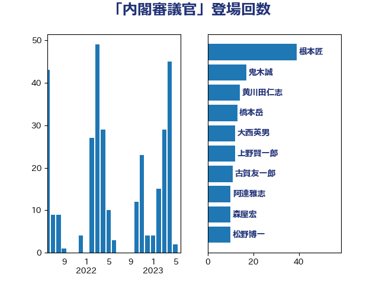

単語「内閣審議官」

| 根本匠 | 自由民主党 | 39 回 |
| 鬼木誠 | 立憲民主党 | 17 回 |
| 黄川田仁志 | 自由民主党 | 14 回 |
| 橋本岳 | 自由民主党 | 13 回 |
| 大西英男 | 自由民主党 | 12 回 |
| 上野賢一郎 | 自由民主党 | 12 回 |
| 古賀友一郎 | 自由民主党 | 11 回 |
| 阿達雅志 | 自由民主党 | 10 回 |
| 森屋宏 | 自由民主党 | 10 回 |
| 松野博一 | 自由民主党 | 10 回 |
| 木原誠二 | 自由民主党 | 10 回 |
| 大塚拓 | 自由民主党 | 9 回 |
| 馬場成志 | 自由民主党 | 8 回 |
| 浮島智子 | 公明党 | 7 回 |
| 三ッ林裕巳 | 自由民主党 | 6 回 |
| 鈴木馨祐 | 自由民主党 | 4 回 |
| 赤羽一嘉 | 公明党 | 4 回 |
| 竹内譲 | 公明党 | 4 回 |
| 塚田一郎 | 自由民主党 | 4 回 |
| 城内実 | 自由民主党 | 4 回 |
| 山谷えり子 | 自由民主党 | 3 回 |
| 大串博志 | 立憲民主党 | 3 回 |
| 鶴保庸介 | 自由民主党 | 2 回 |
| 長峯誠 | 自由民主党 | 2 回 |
| 蓮舫 | 立憲民主党 | 2 回 |
| 義家弘介 | 自由民主党 | 2 回 |
| 河野義博 | 公明党 | 2 回 |
| 櫻井周 | 立憲民主党 | 2 回 |
| 平木大作 | 公明党 | 2 回 |
| 岸田文雄 | 自由民主党 | 2 回 |
| 小林鷹之 | 自由民主党 | 2 回 |
| 塩川鉄也 | 日本共産党 | 2 回 |
| 中根一幸 | 自由民主党 | 2 回 |
| 下条みつ | 立憲民主党 | 2 回 |
| 青木愛 | 立憲民主党 | 1 回 |
| 阿部知子 | 立憲民主党 | 1 回 |
| 長島昭久 | 自由民主党 | 1 回 |
| 野田国義 | 立憲民主党 | 1 回 |
| 赤澤亮正 | 自由民主党 | 1 回 |
| 豊田俊郎 | 自由民主党 | 1 回 |
| 落合貴之 | 立憲民主党 | 1 回 |
| 石田真敏 | 自由民主党 | 1 回 |
| 石橋通宏 | 立憲民主党 | 1 回 |
| 源馬謙太郎 | 立憲民主党 | 1 回 |
| 江藤拓 | 自由民主党 | 1 回 |
| 江田憲司 | 立憲民主党 | 1 回 |
| 杉久武 | 公明党 | 1 回 |
| 新妻秀規 | 公明党 | 1 回 |
| 斎藤嘉隆 | 立憲民主党 | 1 回 |
| 平口洋 | 自由民主党 | 1 回 |
| 岩屋毅 | 自由民主党 | 1 回 |
| 山田宏 | 自由民主党 | 1 回 |
| 山本順三 | 自由民主党 | 1 回 |
| 小里泰弘 | 自由民主党 | 1 回 |
| 太田房江 | 自由民主党 | 1 回 |
| 大西健介 | 立憲民主党 | 1 回 |
| 古川禎久 | 自由民主党 | 1 回 |
| 古川俊治 | 自由民主党 | 1 回 |
| 伊藤忠彦 | 自由民主党 | 1 回 |
| 三浦信祐 | 公明党 | 1 回 |
| 三原じゅん子 | 自由民主党 | 1 回 |